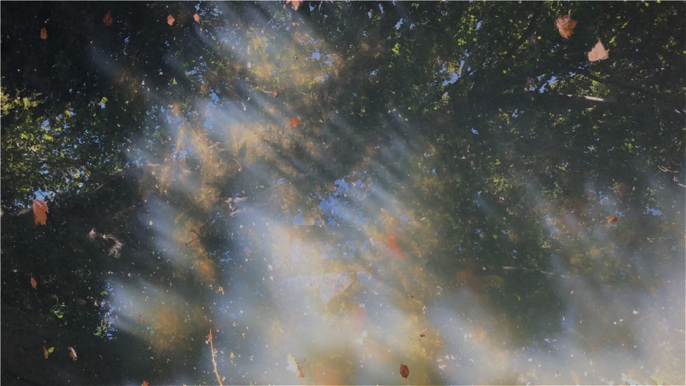
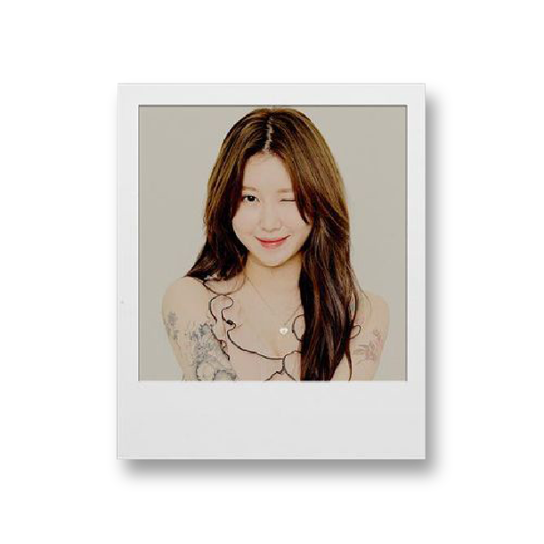
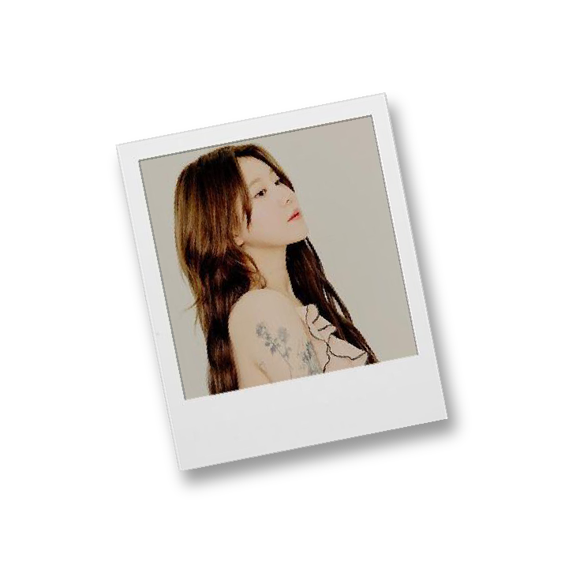
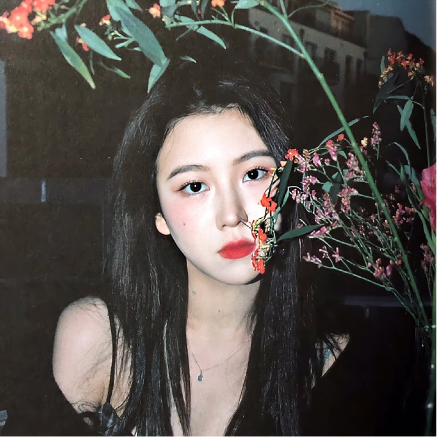
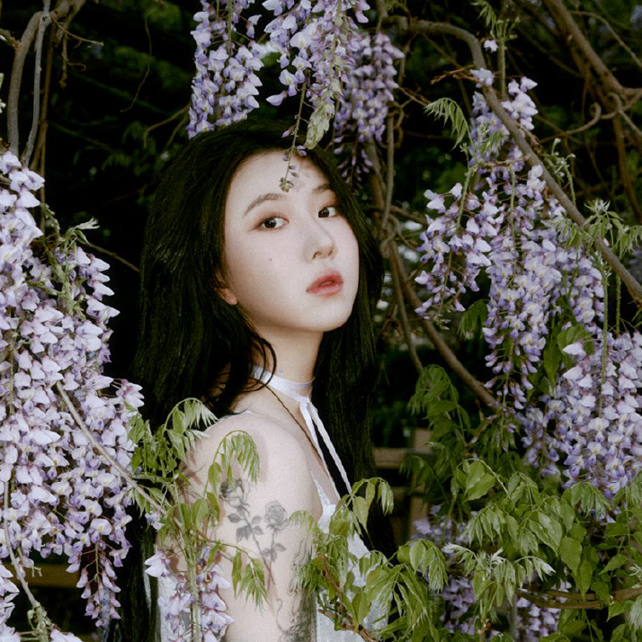
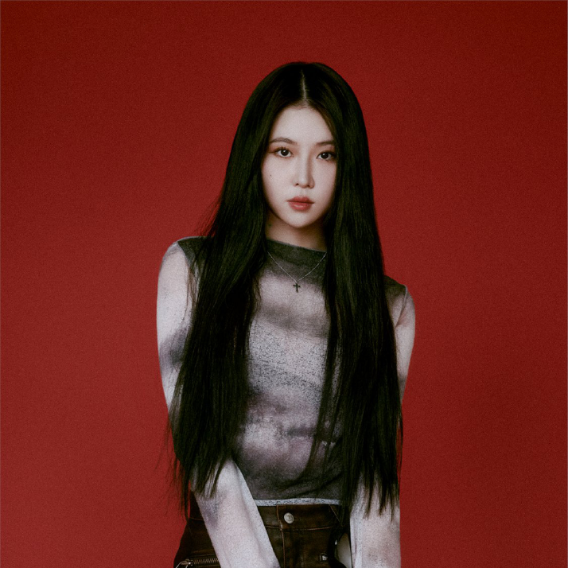
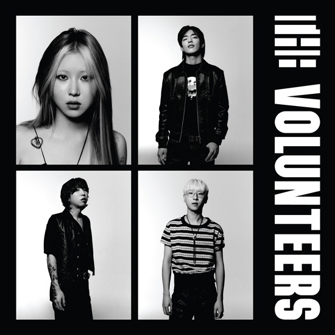
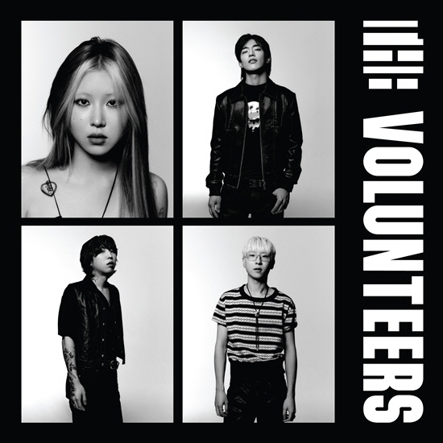
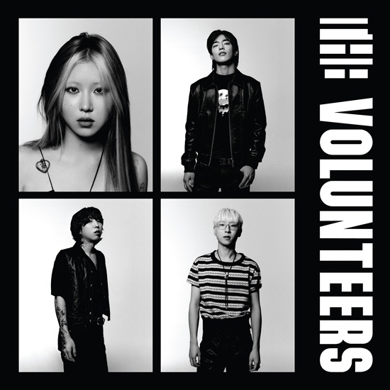

Main
Profile
Album
Photo
Video





백예린
Baek Yerin
대한민국의 가수. 밴드 The Volunteers의 프론트맨이자 싱어송라이터.
거의 모든 장르를 감성으로 감쌀 정도로 가창력과 곡 해석이 뛰어나다는 평을 받는다.
자신의 목소리가 가진 매력에 대해 "편안하고 계속 들을 수 있는 것 " 이라고 말한다.
또한 "좋은 사람이 되어서 그걸 가사로 풀어내며 오래 음악 하는 것이 꿈이다" 라고 하기도 했다.

 
